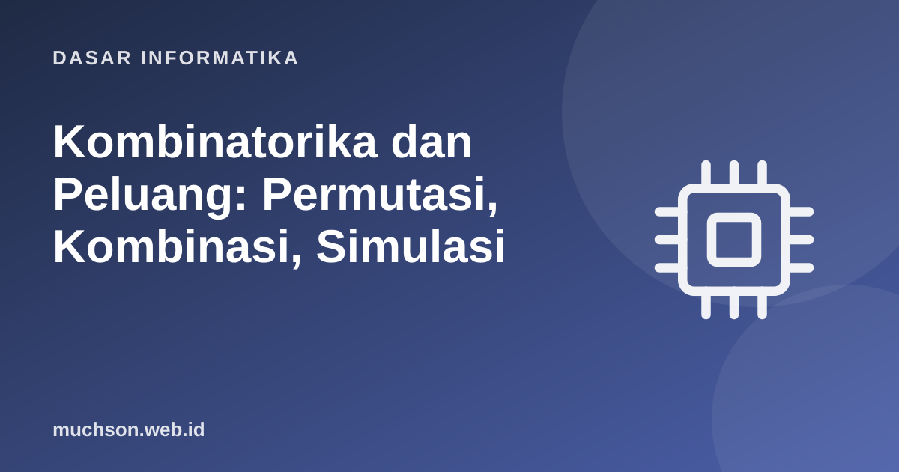

Beranda › Artikel › Dasar Informatika
Dasar InformatikaKombinatorika dan Peluang: Permutasi, Kombinasi, Simulasi
Berapa banyak kata sandi 8 karakter yang mungkin? Berapa peluang dua orang di satu kelas berulang tahun sama? Seberapa percaya hasil tes medis yang positif? Kombinatorika dan peluang menjawab pertanyaan seperti ini, dan mendasari analisis algoritma, keamanan, basis data, dan pembelajaran mesin.
Sebaiknya sudah paham: himpunan, rekursi dasar

Setelah membaca dan mencoba materi ini, Anda mampu:
- memakai prinsip penjumlahan dan perkalian
- membedakan permutasi dan kombinasi serta menghitungnya
- memakai peluang klasik, aturan penjumlahan, dan perkalian
- menghitung peluang bersyarat dan memakai teorema Bayes
- memverifikasi jawaban analitis dengan simulasi Monte Carlo
Prinsip menghitung
def baca(detik):
for batas, satuan in ((60, "detik"), (3600, "menit"), (86400, "jam"), (86400 * 365, "hari")):
if detik < batas:
pembagi = {"detik": 1, "menit": 60, "jam": 3600, "hari": 86400}[satuan]
return f"{detik / pembagi:,.1f} {satuan}"
return f"{detik / (86400 * 365):,.3g} tahun"
# kata sandi acak: ruang kemungkinan tumbuh eksponensial terhadap panjang
for panjang, alfabet, nama in [(6, 10, "angka saja (10)"), (8, 26, "huruf kecil (26)"), (8, 62, "huruf+angka (62)"), (12, 94, "semua karakter cetak (94)")]:
total = alfabet ** panjang
print(f"{panjang:>2} karakter, {nama:<26} {total:>28,} kemungkinan -> rata-rata {baca(total / 2 / 1e10)} pada 10 miliar tebakan/detik") 6 karakter, angka saja (10) 1,000,000 kemungkinan -> rata-rata 0.0 detik pada 10 miliar tebakan/detik
8 karakter, huruf kecil (26) 208,827,064,576 kemungkinan -> rata-rata 10.4 detik pada 10 miliar tebakan/detik
8 karakter, huruf+angka (62) 218,340,105,584,896 kemungkinan -> rata-rata 3.0 jam pada 10 miliar tebakan/detik
12 karakter, semua karakter cetak (94) 475,920,314,814,253,376,475,136 kemungkinan -> rata-rata 7.55e+05 tahun pada 10 miliar tebakan/detik
Permutasi dan kombinasi
| Urutan penting? | Rumus | Contoh: pilih 3 dari 5 orang | |
|---|---|---|---|
| Permutasi P(n, r) | Ya | n! / (n − r)! | 5×4×3 = 60 (ketua, wakil, sekretaris) |
| Kombinasi C(n, r) | Tidak | n! / (r! (n − r)!) | 60 / 3! = 10 (panitia 3 orang) |
from math import factorial, perm, comb
from itertools import permutations, combinations
print("5! =", factorial(5), "| P(5,3) =", perm(5, 3), "| C(5,3) =", comb(5, 3))
orang = ["A", "B", "C", "D", "E"]
print("jumlah permutasi 3 dari 5:", len(list(permutations(orang, 3))), "contoh:", list(permutations(orang, 3))[:3])
print("jumlah kombinasi 3 dari 5:", len(list(combinations(orang, 3))), "contoh:", list(combinations(orang, 3))[:3])
# identitas: C(n,r) = C(n,n-r); jumlah semua C(n,r) = 2^n
n = 10
print(comb(10, 3) == comb(10, 7), sum(comb(n, r) for r in range(n + 1)) == 2 ** n)
# segitiga Pascal: C(n,r) = C(n-1,r-1) + C(n-1,r)
for baris in range(6):
print(" ".join(f"{comb(baris, r):>2}" for r in range(baris + 1)).center(24))
# contoh: berapa poker "full house"? 3 kartu sejenis + 2 kartu sejenis dari kartu 52
full_house = 13 * comb(4, 3) * 12 * comb(4, 2)
print("\nfull house:", full_house, "dari", comb(52, 5), "tangan ->", f"{full_house / comb(52, 5) * 100:.3f}%")5! = 120 | P(5,3) = 60 | C(5,3) = 10
jumlah permutasi 3 dari 5: 60 contoh: [('A', 'B', 'C'), ('A', 'B', 'D'), ('A', 'B', 'E')]
jumlah kombinasi 3 dari 5: 10 contoh: [('A', 'B', 'C'), ('A', 'B', 'D'), ('A', 'B', 'E')]
True True
1
1 1
1 2 1
1 3 3 1
1 4 6 4 1
1 5 10 10 5 1
full house: 3744 dari 2598960 tangan -> 0.144%
Peluang dasar
Bila semua hasil sama mungkin, P(A) = (hasil yang diinginkan) / (semua hasil), bernilai antara 0 dan 1. Aturan: P(Aᶜ) = 1 − P(A); P(A ∪ B) = P(A) + P(B) − P(A ∩ B); untuk kejadian bebas, P(A ∩ B) = P(A) · P(B).
import random
from itertools import product
# dua dadu: peluang jumlah = 7
hasil = list(product(range(1, 7), repeat=2))
print("P(jumlah=7) analitis :", sum(1 for a, b in hasil if a + b == 7), "/", len(hasil), "=", round(6 / 36, 4))
# simulasi Monte Carlo untuk memeriksa
rng = random.Random(42)
N = 200_000
sim = sum(1 for _ in range(N) if rng.randint(1, 6) + rng.randint(1, 6) == 7) / N
print("P(jumlah=7) simulasi :", round(sim, 4), f"(dari {N:,} lemparan)")
# "gambler's fallacy": setelah 5 kali angka, peluang angka berikutnya tetap 0.5
berurutan = tahan = 0
for _ in range(400_000):
lemparan = [rng.random() < 0.5 for _ in range(6)]
if all(lemparan[:5]):
berurutan += 1; tahan += lemparan[5]
print("setelah 5 angka berturut-turut, P(angka lagi) =", round(tahan / berurutan, 3))P(jumlah=7) analitis : 6 / 36 = 0.1667
P(jumlah=7) simulasi : 0.165 (dari 200,000 lemparan)
setelah 5 angka berturut-turut, P(angka lagi) = 0.505
Paradoks ulang tahun
Berapa orang dalam satu ruangan agar peluang ada dua yang berulang tahun sama melebihi 50%? Jawabannya mengejutkan: hanya 23 orang. Intuisi kita membandingkan dengan diri sendiri, padahal jumlah pasangan tumbuh kuadratik: 23 orang menghasilkan 253 pasangan.
from math import prod
import random
def peluang_sama(n, hari=365):
tak_ada = prod((hari - k) / hari for k in range(n)) # semua berbeda
return 1 - tak_ada
for n in (10, 23, 30, 50, 70):
print(f"{n:>3} orang: peluang ada yang berulang tahun sama = {peluang_sama(n) * 100:5.1f}%")
rng = random.Random(7)
N = 20000
sim = sum(1 for _ in range(N) if len({rng.randrange(365) for _ in range(23)}) < 23) / N
print(f"\nsimulasi untuk 23 orang: {sim * 100:.1f}%")
# kaitannya dengan keamanan: tabrakan hash. Untuk hash b bit, tabrakan muncul setelah ~2^(b/2) masukan
print("hash 32 bit: tabrakan setelah ~", int(2 ** 16), "masukan | hash 128 bit: ~", f"{2 ** 64:.1e}") 10 orang: peluang ada yang berulang tahun sama = 11.7%
23 orang: peluang ada yang berulang tahun sama = 50.7%
30 orang: peluang ada yang berulang tahun sama = 70.6%
50 orang: peluang ada yang berulang tahun sama = 97.0%
70 orang: peluang ada yang berulang tahun sama = 99.9%
simulasi untuk 23 orang: 51.1%
hash 32 bit: tabrakan setelah ~ 65536 masukan | hash 128 bit: ~ 1.8e+19
Peluang bersyarat dan Bayes
P(A | B) = P(A ∩ B) / P(B) Bayes: P(A | B) = P(B | A) · P(A) / P(B)
Contoh klasik: sebuah penyakit menyerang 1% populasi. Tes memiliki sensitivitas 95% (benar positif bila sakit) dan spesifisitas 90% (benar negatif bila sehat). Bila hasil tes seseorang positif, seberapa besar peluang ia benar-benar sakit?
prevalensi = 0.01
sensitivitas = 0.95 # P(positif | sakit)
spesifisitas = 0.90 # P(negatif | sehat)
p_positif = sensitivitas * prevalensi + (1 - spesifisitas) * (1 - prevalensi)
p_sakit_jika_positif = sensitivitas * prevalensi / p_positif
print(f"P(positif) = {p_positif:.4f}")
print(f"P(sakit | tes positif) = {p_sakit_jika_positif:.4f} (hanya ~{p_sakit_jika_positif * 100:.1f}%)")
# cara intuitif: bayangkan 10.000 orang
sakit, sehat = 10_000 * prevalensi, 10_000 * (1 - prevalensi)
benar_positif = sakit * sensitivitas
salah_positif = sehat * (1 - spesifisitas)
print(f"dari 10.000 orang: {benar_positif:.0f} sakit-positif vs {salah_positif:.0f} sehat-positif -> {benar_positif / (benar_positif + salah_positif) * 100:.1f}%")P(positif) = 0.1085
P(sakit | tes positif) = 0.0876 (hanya ~8.8%)
dari 10.000 orang: 95 sakit-positif vs 990 sehat-positif -> 8.8%
1. Berapa cara menyusun huruf dari kata "KOMPUTER" (semua berbeda)?
2. Berapa banyak kata berbeda dari "BAKSO"? Dari "KAKAK"?
3. Dari 10 mahasiswa dipilih 4 untuk tim. Berapa cara?
4. Lempar dua koin. Peluang minimal satu gambar?
- Perkalian untuk langkah berurutan; penjumlahan untuk pilihan yang saling lepas.
- Permutasi mementingkan urutan; kombinasi tidak.
- Peluang klasik, kejadian bebas, dan inklusi-eksklusi.
- Bayes memperbarui keyakinan dengan bukti baru; waspadai tingkat dasar.
- Simulasi Monte Carlo memeriksa jawaban analitis.
Tanya jawab
Apa itu distribusi binomial?
Mengapa simulasi tidak persis sama dengan jawaban analitis?
Di mana peluang dipakai dalam informatika?
Referensi
- Kenneth Rosen, Discrete Mathematics and Its Applications (McGraw-Hill)
- Blitzstein dan Hwang, Introduction to Probability (CRC Press; Harvard Stat 110)
- Dokumentasi Python: math.comb dan math.perm
- MIT OpenCourseWare 6.042J: Mathematics for Computer Science